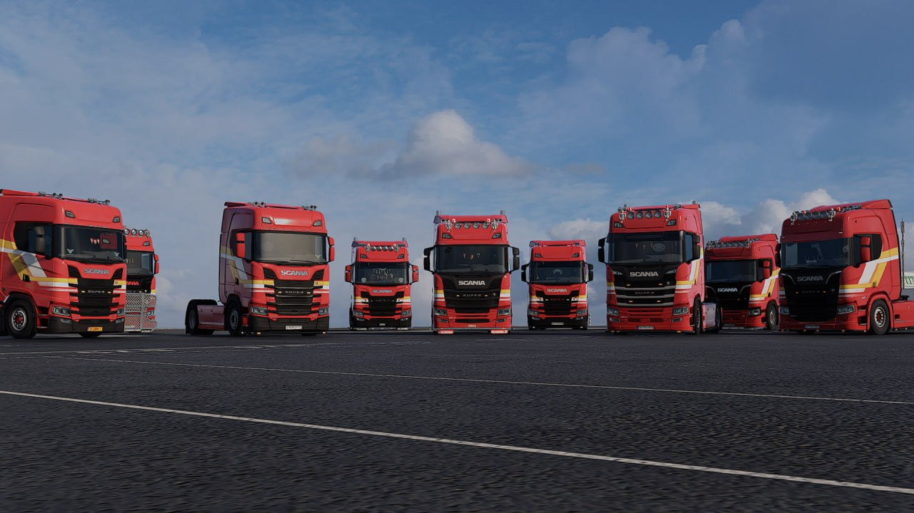
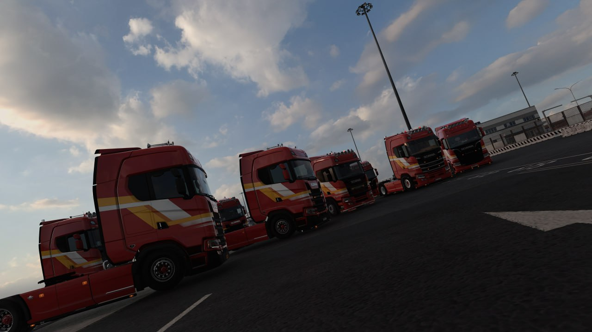

О компании Vabis Transport
Узнайте больше о нашей истории, ценностях и людях, которые делают нашу компанию особенной

Наша история
Vabis Transport была основана Никитой Ariphe 30 Июля 2025 года с целью создать не просто виртуальную транспортную компанию, а настоящее сообщество единомышленников. Название "Vabis" выбрано не случайно — оно отсылает к истории шведского автомобилестроения и символизирует надежность и качество.
За время существования мы выросли в дружный коллектив, который ценит красивый стиль и дисциплину. На сегодняшний день мы имеем статус Validated VTC в TruckersMP и продолжаем активно развиваться, привлекая новых водителей в возрасте 15+.
Мы гордимся нашей атмосферой взаимопомощи и уважения. У нас есть собственная покраска VTC, собственный Discord бот, а также система ежемесячного поощрения лучших водителей. Для нас важно не количество, а качество — каждый новый член команды становится частью большой семьи Vabis Transport.
Наши ценности
Дружный коллектив
Мы поддерживаем друг друга и создаем атмосферу, в которой приятно находиться и развиваться вместе.
Красивый стиль
Наши Chill Vabis конвои славятся красивым стилем. Мы гордимся собственной покраской VTC.
Система рангов
Карьерный рост на основе реального пробега. Пройди тысячи километров и стань профессионалом!
Свой Discord бот
Мы используем собственного бота для автоматизации и улучшения взаимодействия в сообществе.
Собственный Vabis Hub
Мы используем уникальную веб-платформу и свой кастомный трекер для автоматического учета рейсов, детальной статистики и формирования рейтинга водителей.
Хочешь стать частью Vabis Transport?
🚚 ТК Vabis Transport | Validated VTC | Набор водителей 15+
Мы всегда открыты для новых водителей, которые разделяют наши ценности и хотят
стать частью дружного сообщества. Дружный коллектив, конвои, ивенты, система рангов,
Save Edit — всё это ждет тебя!
- Возраст от 15 лет
- Аккаунт в TruckersMP (не более 4-х действующих банов)
- Минимальнй возраст учетной записи TruckersMP: 3 месяца
- Готовность соблюдать правила компании
- Обязательное присутствие в Trucky или TrucksBook

ИТОГИ ВОДИТЕЛЕЙ
TRUCKY - Общий зачет


Реальные мили


TrucksBook


Часто задаваемые вопросы
Когда была основана компания?
Vabis Transport была основана Никитой Ariphe 30 Июля 2025 года. Сейчас мы готовимся отмечать наш первый год!
Какие конвои вы проводите?
У нас есть Chill Vabis конвои, где главное правило — красивый стиль! Также мы проводим месячные конвои с другими VTC и участвуем в различных конвоях от других транспортных компаний.
Как работает система рангов?
Система рангов основана на общем пробеге, зарегистрированном через Trucky (основной счетчик) или TrucksBook. Каждый член компании обязан присутствовать в одном из данных счетных устройств и может повышаться по рангам, начиная с низов и достигая вершины.
Что такое "Водитель месяца"?
Это ежемесячная награда сотруднику, который внес наибольший вклад в жизнь VTC. Информация о водителе публикуется в нашем Discord-канале и отображается на сайте TruckersMP.
Есть ли у вас Discord бот?
Да, у нас есть собственный Discord бот, который помогает автоматизировать многие процессы и улучшает взаимодействие в сообществе.
Есть ли у вас собственная покраска?
Да, у нашей VTC есть красивая раскраска, и мы очень гордимся ею!